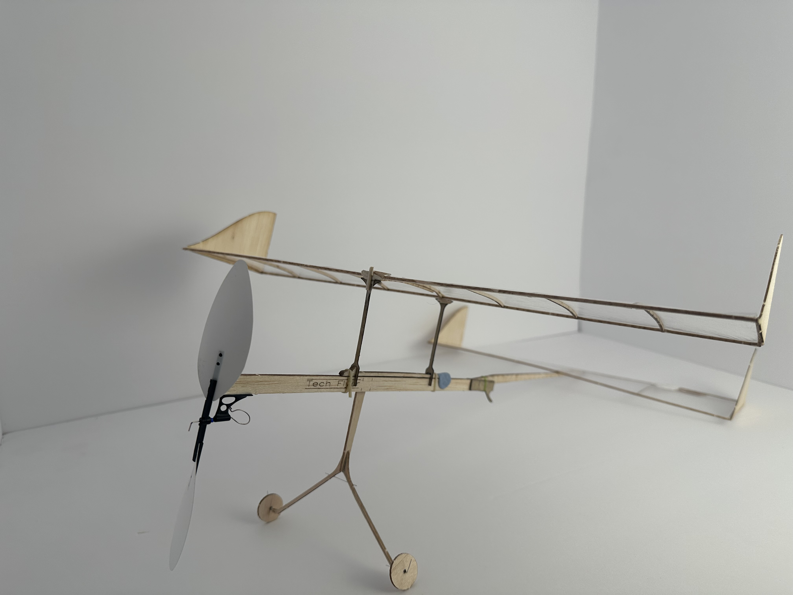

Hello! I'm Philipe Pajishvili, a rising sophomore at Union County Magnet High School passionate about engineering, technology, and building solutions to real-world problems.
My interests span mechanical and aerospace engineering, software development, robotics, and rapid prototyping. I enjoy turning ideas into tangible projects, whether that means developing applications, designing engineering prototypes, or experimenting with new technologies.
Through competitions, STEM programs, and independent projects, I have gained experience with the engineering process: researching ideas, building prototypes, testing designs, analyzing results, and improving through iteration.
I am always looking for new challenges that push me to learn, create, and explore the future of technology.
Projects:
SJA Mobile:
Developed the official mobile application for St. John the Apostle School to improve access to school information and resources for students, families, and staff. The app provides a centralized platform for viewing important updates, announcements, and school-related content.
From concept to deployment, I worked through the full development process, including planning features, designing the user experience, building the application, and refining it based on usability. This project allowed me to apply software development skills while creating a practical tool used by a real school community.
Built and optimized a rubber-powered model aircraft for the Technology Student Association (TSA) Flight Endurance competition. Using an official competition kit as the foundation, I assembled the aircraft and improved its performance through iterative testing, adjusting factors such as aircraft balance, rubber motor configuration, and winding strategy to maximize flight time within strict competition rules.
This project strengthened my understanding of aerodynamics, lightweight structures, and iterative engineering through extensive testing and performance analysis. My work earned 3rd Place at the New Jersey TSA Flight Endurance State Conference, making me the first freshman from my school district to place in the event and qualifying for the TSA National Conference, where I represented New Jersey in national competition.

Friction-Fit Birdhouse:
This project focuses on the CAD design and digital fabrication of an adhesive-free shelter specifically engineered for the Black-Capped Chickadee. Designed using AutoCAD, the structure features an interlocking, friction-fit design that eliminates the need for glue, tape, or external fasteners during frame assembly. The CAD layout utilizes a precise color-coded nesting key—categorizing cut and etch operations into distinct DXF layers—to maximize material efficiency on a single sheet of plywood. The physical build process translates the DXF cut files directly to a laser cutter for precision part production. Once cut, the custom-fitted wood components slide and lock securely together in a step-by-step assembly sequence. Tailored to the nesting habits and environmental needs of local Chickadee populations , the completed birdhouse is designed to be securely mounted to a tree trunk at a height of 4 to 15 feet, demonstrating a complete workflow from ecological research and 2D/3D parametric modeling to rapid prototyping and functional hardware.
-1.png)